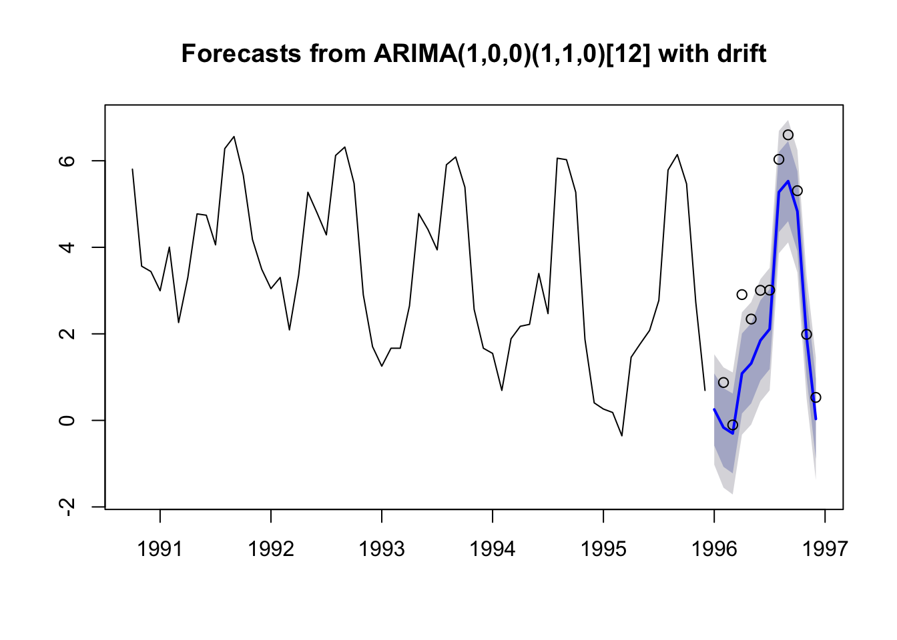

7.2 Seasonal ARIMA model
auto.arima() will recognize that our data has season and fit a seasonal ARIMA model to our data by default. Let’s use the data that ets() used. This is shorter than our training data and is Oct 1990 to Dec 1995. The data used by ets() is returned in fit$x.
We will redefine the training data to be the longest segment with no missing values.
traindat <- window(chinookts, c(1990,10), c(1995,12))
testdat <- window(chinookts, c(1996,1), c(1996,12))
fit <- auto.arima(traindat)
fr <- forecast(fit, h=12)
plot(fr)
points(testdat)